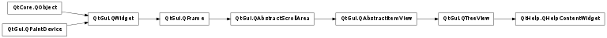

QHelpContentWidget ¶

Synopsis ¶
Functions ¶
- def indexOf (link)
- def searchContentItem (model, parent, path)
Signals ¶
- def linkActivated (link)
Detailed Description ¶
The PySide.QtHelp.QHelpContentWidget class provides a tree view for displaying help content model items.
- PySide.QtHelp.QHelpContentWidget. indexOf ( link ) ¶
-
Parameters: link – PySide.QtCore.QUrl Return type: PySide.QtCore.QModelIndex Returns the index of the content item with the link . An invalid index is returned if no such an item exists.
- PySide.QtHelp.QHelpContentWidget. linkActivated ( link ) ¶
-
Parameters: link – PySide.QtCore.QUrl
- PySide.QtHelp.QHelpContentWidget. searchContentItem ( model , parent , path ) ¶
-
Parameters: - model – PySide.QtHelp.QHelpContentModel
- parent – PySide.QtCore.QModelIndex
- path – unicode
Return type: PySide.QtCore.bool
- PySide.QtHelp.QHelpContentWidget. showLink ( index ) ¶
-
Parameters: index – PySide.QtCore.QModelIndex